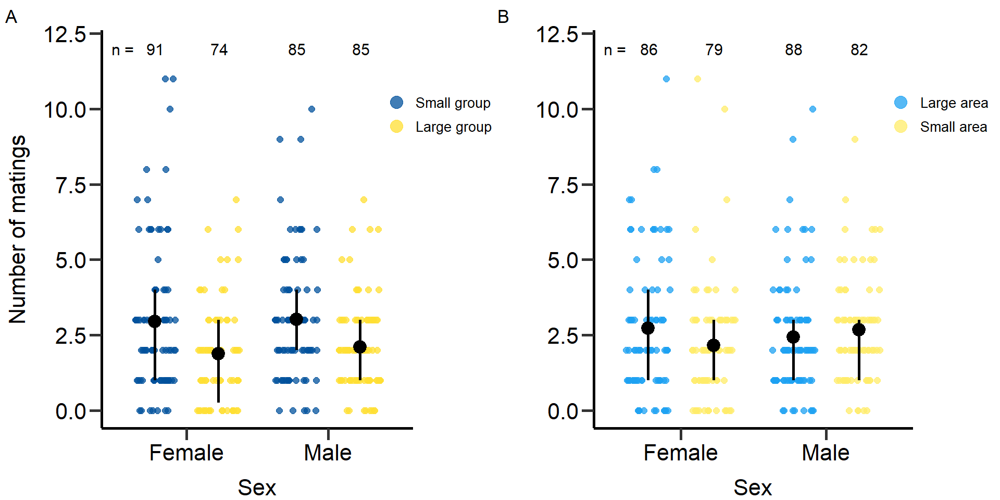

Last updated: 2022-07-22
Checks: 7 0
Knit directory:
Density_and_sexual_selection_2022/
This reproducible R Markdown analysis was created with workflowr (version 1.7.0). The Checks tab describes the reproducibility checks that were applied when the results were created. The Past versions tab lists the development history.
Great! Since the R Markdown file has been committed to the Git repository, you know the exact version of the code that produced these results.
Great job! The global environment was empty. Objects defined in the global environment can affect the analysis in your R Markdown file in unknown ways. For reproduciblity it’s best to always run the code in an empty environment.
The command set.seed(20210613) was run prior to running
the code in the R Markdown file. Setting a seed ensures that any results
that rely on randomness, e.g. subsampling or permutations, are
reproducible.
Great job! Recording the operating system, R version, and package versions is critical for reproducibility.
Nice! There were no cached chunks for this analysis, so you can be confident that you successfully produced the results during this run.
Great job! Using relative paths to the files within your workflowr project makes it easier to run your code on other machines.
Great! You are using Git for version control. Tracking code development and connecting the code version to the results is critical for reproducibility.
The results in this page were generated with repository version 4de8636. See the Past versions tab to see a history of the changes made to the R Markdown and HTML files.
Note that you need to be careful to ensure that all relevant files for
the analysis have been committed to Git prior to generating the results
(you can use wflow_publish or
wflow_git_commit). workflowr only checks the R Markdown
file, but you know if there are other scripts or data files that it
depends on. Below is the status of the Git repository when the results
were generated:
Ignored files:
Ignored: .Rhistory
Ignored: .Rproj.user/
Note that any generated files, e.g. HTML, png, CSS, etc., are not included in this status report because it is ok for generated content to have uncommitted changes.
These are the previous versions of the repository in which changes were
made to the R Markdown (analysis/index.Rmd) and HTML
(docs/index.html) files. If you’ve configured a remote Git
repository (see ?wflow_git_remote), click on the hyperlinks
in the table below to view the files as they were in that past version.
| File | Version | Author | Date | Message |
|---|---|---|---|---|
| html | 4de8636 | Lennart Winkler | 2022-07-22 | Build site. |
| Rmd | 2d60ef2 | Lennart Winkler | 2022-07-22 | wflow_publish(all = T) |
| html | 2d60ef2 | Lennart Winkler | 2022-07-22 | wflow_publish(all = T) |
| Rmd | c31e7ea | Lennart Winkler | 2022-07-21 | start |
| html | c31e7ea | Lennart Winkler | 2022-07-21 | start |
Supplementary material reporting R code for the manuscript ‘Population density affects sexual selection in the red flour beetle’.
Before we started the analyses, we loaded all necessary packages and data.
#load packages
rm(list = ls())
library(ggeffects)
library(ggplot2)
library(gridExtra)
library(lme4)
library(lmerTest)
library(readr)
library(dplyr)
library(EnvStats)
library(cowplot)
library(gridGraphics)
library(car)
library(RColorBrewer)
library(boot)
library(data.table)
library(base)
library(tidyr)
library(ICC)
#load data
setwd(".")
DB_data=read_delim("./data/DB_AllData_V04.CSV",";", escape_double = FALSE, trim_ws = TRUE)
#Set factors and level factors
DB_data$Week=as.factor(DB_data$Week)
DB_data$Date=as.factor(DB_data$Date)
DB_data$Sex=as.factor(DB_data$Sex)
DB_data$Gr_size=as.factor(DB_data$Gr_size)
DB_data$Gr_size <- factor(DB_data$Gr_size, levels=c("SG","LG"))
DB_data$Area=as.factor(DB_data$Area)
#Load Body mass data
DB_BM_female <- read_delim("./data/DB_mass_focals_female.CSV",
";", escape_double = FALSE, trim_ws = TRUE)
DB_BM_male <- read_delim("./data/DB_mass_focals_males.CSV",
";", escape_double = FALSE, trim_ws = TRUE)
DB_data_m=merge(DB_data,DB_BM_male,by.x = 'Well_ID',by.y = 'ID_male_focals')
DB_data_f=merge(DB_data,DB_BM_female,by.x = 'F1_ID',by.y = 'ID_female_focals')
DB_data=rbind(DB_data_m,DB_data_f)
###Exclude incomplete data
DB_data=DB_data[DB_data$excluded!=1,]
#Calculate total offspring number ####
DB_data$Total_N_MTP1=colSums(rbind(DB_data$N_MTP1_1,DB_data$N_MTP1_2,DB_data$N_MTP1_3,DB_data$N_MTP1_4,DB_data$N_MTP1_5,DB_data$N_MTP1_6), na.rm = T)
DB_data$Total_N_Rd=colSums(rbind(DB_data$N_RD_1,DB_data$N_RD_2,DB_data$N_RD_3,DB_data$N_RD_4,DB_data$N_RD_5,DB_data$N_RD_6), na.rm = T)/DB_data$N_comp
#Calculate proportional RS ####
#Percentage focal offspring
DB_data$m_prop_RS=NA
DB_data$m_prop_RS=(DB_data$Total_N_MTP1/(DB_data$Total_N_MTP1+DB_data$Total_N_Rd))*100
DB_data$m_prop_RS[DB_data$Sex=='F']=NA
DB_data$f_prop_RS=NA
DB_data$f_prop_RS=(DB_data$Total_N_MTP1/(DB_data$Total_N_MTP1+DB_data$Total_N_Rd))*100
DB_data$f_prop_RS[DB_data$Sex=='M']=NA
#Calculate proportion of successful matings ####
DB_data$Prop_MS=NA
DB_data$Prop_MS=DB_data$Matings_number/(DB_data$Attempts_number+DB_data$Matings_number)
DB_data$Prop_MS[DB_data$Prop_MS==0]=NA
#Calculate total encounters ####
DB_data$Total_Encounters=NA
DB_data$Total_Encounters=DB_data$Attempts_number+DB_data$Matings_number
# Treatment identifier for each density ####
n=1
DB_data$Treatment=NA
for(n in 1:length(DB_data$Sex)){if(DB_data$Gr_size[n]=='SG' && DB_data$Area[n]=='Large'){DB_data$Treatment[n]='D = 0.26'
}else if(DB_data$Gr_size[n]=='LG' && DB_data$Area[n]=='Large'){DB_data$Treatment[n]='D = 0.52'
}else if(DB_data$Gr_size[n]=='SG' && DB_data$Area[n]=='Small'){DB_data$Treatment[n]='D = 0.67'
}else if(DB_data$Gr_size[n]=='LG' && DB_data$Area[n]=='Small'){DB_data$Treatment[n]='D = 1.33'
}else{DB_data$Treatment[n]=NA}}
DB_data$Treatment=as.factor(DB_data$Treatment)
# Exclude Incubator 3 data #### -> poor performance
DB_data_clean=DB_data[DB_data$Incu3!=1,]
# Calculate genetic MS ####
# Only clean data
DB_data_clean$gMS=NA
for(i in 1:length(DB_data_clean$Sex)) {if (DB_data_clean$N_MTP1_1[i]>=1 & !is.na (DB_data_clean$N_MTP1_1[i])){
DB_data_clean$gMS[i]=1
}else{DB_data_clean$gMS[i]=0}}
for(i in 1:length(DB_data_clean$Sex)) {if (DB_data_clean$N_MTP1_2[i]>=1 & !is.na (DB_data_clean$N_MTP1_2[i])){
DB_data_clean$gMS[i]=DB_data_clean$gMS[i]+1
}else{}}
for(i in 1:length(DB_data_clean$Sex)) {if (DB_data_clean$N_MTP1_3[i]>=1 & !is.na (DB_data_clean$N_MTP1_3[i])){
DB_data_clean$gMS[i]=DB_data_clean$gMS[i]+1}else{}}
for(i in 1:length(DB_data_clean$Sex)) {if (DB_data_clean$N_MTP1_4[i]>=1 & !is.na (DB_data_clean$N_MTP1_4[i])){
DB_data_clean$gMS[i]=DB_data_clean$gMS[i]+1}else{}}
for(i in 1:length(DB_data_clean$Sex)) {if (DB_data_clean$N_MTP1_5[i]>=1 & !is.na (DB_data_clean$N_MTP1_5[i])){
DB_data_clean$gMS[i]=DB_data_clean$gMS[i]+1}else{}}
for(i in 1:length(DB_data_clean$Sex)) {if (DB_data_clean$N_MTP1_6[i]>=1 & !is.na (DB_data_clean$N_MTP1_6[i])){
DB_data_clean$gMS[i]=DB_data_clean$gMS[i]+1}else{}}
# All data
DB_data$gMS=NA
for(i in 1:length(DB_data$Sex)) {if (DB_data$N_MTP1_1[i]>=1 & !is.na (DB_data$N_MTP1_1[i])){
DB_data$gMS[i]=1
}else{DB_data$gMS[i]=0}}
for(i in 1:length(DB_data$Sex)) {if (DB_data$N_MTP1_2[i]>=1 & !is.na (DB_data$N_MTP1_2[i])){
DB_data$gMS[i]=DB_data$gMS[i]+1
}else{}}
for(i in 1:length(DB_data$Sex)) {if (DB_data$N_MTP1_3[i]>=1 & !is.na (DB_data$N_MTP1_3[i])){
DB_data$gMS[i]=DB_data$gMS[i]+1}else{}}
for(i in 1:length(DB_data$Sex)) {if (DB_data$N_MTP1_4[i]>=1 & !is.na (DB_data$N_MTP1_4[i])){
DB_data$gMS[i]=DB_data$gMS[i]+1}else{}}
for(i in 1:length(DB_data$Sex)) {if (DB_data$N_MTP1_5[i]>=1 & !is.na (DB_data$N_MTP1_5[i])){
DB_data$gMS[i]=DB_data$gMS[i]+1}else{}}
for(i in 1:length(DB_data$Sex)) {if (DB_data$N_MTP1_6[i]>=1 & !is.na (DB_data$N_MTP1_6[i])){
DB_data$gMS[i]=DB_data$gMS[i]+1}else{}}
#Calculate Rd competition RS ####
DB_data_clean$m_RS_Rd_comp=NA
for(i in 1:length(DB_data_clean$Sex)) {if (DB_data_clean$N_MTP1_1[i]>=1 & !is.na (DB_data_clean$N_MTP1_1[i])){
DB_data_clean$m_RS_Rd_comp[i]=DB_data_clean$N_RD_1[i]
}else{DB_data_clean$m_RS_Rd_comp[i]=0}}
for(i in 1:length(DB_data_clean$Sex)) {if (DB_data_clean$N_MTP1_2[i]>=1 & !is.na (DB_data_clean$N_MTP1_2[i])){
DB_data_clean$m_RS_Rd_comp[i]=DB_data_clean$m_RS_Rd_comp[i]+DB_data_clean$N_RD_2[i]
}else{}}
for(i in 1:length(DB_data_clean$Sex)) {if (DB_data_clean$N_MTP1_3[i]>=1 & !is.na (DB_data_clean$N_MTP1_3[i])){
DB_data_clean$m_RS_Rd_comp[i]=DB_data_clean$m_RS_Rd_comp[i]+DB_data_clean$N_RD_3[i]
}else{}}
for(i in 1:length(DB_data_clean$Sex)) {if (DB_data_clean$N_MTP1_4[i]>=1 & !is.na (DB_data_clean$N_MTP1_4[i])){
DB_data_clean$m_RS_Rd_comp[i]=DB_data_clean$m_RS_Rd_comp[i]+DB_data_clean$N_RD_4[i]
}else{}}
for(i in 1:length(DB_data_clean$Sex)) {if (DB_data_clean$N_MTP1_5[i]>=1 & !is.na (DB_data_clean$N_MTP1_5[i])){
DB_data_clean$m_RS_Rd_comp[i]=DB_data_clean$m_RS_Rd_comp[i]+DB_data_clean$N_RD_5[i]
}else{}}
for(i in 1:length(DB_data_clean$Sex)) {if (DB_data_clean$N_MTP1_6[i]>=1 & !is.na (DB_data_clean$N_MTP1_6[i])){
DB_data_clean$m_RS_Rd_comp[i]=DB_data_clean$m_RS_Rd_comp[i]+DB_data_clean$N_RD_6[i]
}else{}}
# Check matings of males #### -> add copulations where offspring found but no copulation registered
for(i in 1:length(DB_data_clean$Sex)) {if (DB_data_clean$N_MTP1_1[i]>=1 && DB_data_clean$Cop_Fe_1[i]==0 & !is.na (DB_data_clean$Cop_Fe_1[i])& !is.na (DB_data_clean$N_MTP1_1[i])){
DB_data_clean$Cop_Fe_1[i]=1}else{}}
for(i in 1:length(DB_data_clean$Sex)) {if (DB_data_clean$N_MTP1_2[i]>=1 && DB_data_clean$Cop_Fe_2[i]==0 & !is.na (DB_data_clean$Cop_Fe_2[i])& !is.na (DB_data_clean$N_MTP1_2[i])){
DB_data_clean$Cop_Fe_2[i]=1}else{}}
for(i in 1:length(DB_data_clean$Sex)) {if (DB_data_clean$N_MTP1_3[i]>=1 && DB_data_clean$Cop_Fe_3[i]==0 & !is.na (DB_data_clean$Cop_Fe_3[i])& !is.na (DB_data_clean$N_MTP1_3[i])){
DB_data_clean$Cop_Fe_3[i]=1}else{}}
for(i in 1:length(DB_data_clean$Sex)) {if (DB_data_clean$N_MTP1_4[i]>=1 && DB_data_clean$Cop_Fe_4[i]==0 & !is.na (DB_data_clean$Cop_Fe_4[i])& !is.na (DB_data_clean$N_MTP1_4[i])){
DB_data_clean$Cop_Fe_4[i]=1}else{}}
for(i in 1:length(DB_data_clean$Sex)) {if (DB_data_clean$N_MTP1_5[i]>=1 && DB_data_clean$Cop_Fe_5[i]==0 & !is.na (DB_data_clean$Cop_Fe_5[i])& !is.na (DB_data_clean$N_MTP1_5[i])){
DB_data_clean$Cop_Fe_5[i]=1}else{}}
for(i in 1:length(DB_data_clean$Sex)) {if (DB_data_clean$N_MTP1_6[i]>=1 && DB_data_clean$Cop_Fe_6[i]==0 & !is.na (DB_data_clean$Cop_Fe_6[i])& !is.na (DB_data_clean$N_MTP1_6[i])){
DB_data_clean$Cop_Fe_6[i]=1}else{}}
# Calculate Rd competition RS of all copulations with potential sperm competition with the focal ####
DB_data_clean$m_RS_Rd_comp_full=NA
for(i in 1:length(DB_data_clean$Sex)) {if (DB_data_clean$Cop_Fe_1[i]>=1 & !is.na (DB_data_clean$Cop_Fe_1[i])){
DB_data_clean$m_RS_Rd_comp_full[i]=DB_data_clean$N_RD_1[i]
}else{DB_data_clean$m_RS_Rd_comp_full[i]=0}}
for(i in 1:length(DB_data_clean$Sex)) {if (DB_data_clean$Cop_Fe_2[i]>=1 & !is.na (DB_data_clean$Cop_Fe_2[i])){
DB_data_clean$m_RS_Rd_comp_full[i]=DB_data_clean$m_RS_Rd_comp_full[i]+DB_data_clean$N_RD_2[i]
}else{}}
for(i in 1:length(DB_data_clean$Sex)) {if (DB_data_clean$Cop_Fe_3[i]>=1 & !is.na (DB_data_clean$Cop_Fe_3[i])){
DB_data_clean$m_RS_Rd_comp_full[i]=DB_data_clean$m_RS_Rd_comp_full[i]+DB_data_clean$N_RD_3[i]
}else{}}
for(i in 1:length(DB_data_clean$Sex)) {if (DB_data_clean$Cop_Fe_4[i]>=1 & !is.na (DB_data_clean$Cop_Fe_4[i])){
DB_data_clean$m_RS_Rd_comp_full[i]=DB_data_clean$m_RS_Rd_comp_full[i]+DB_data_clean$N_RD_4[i]
}else{}}
for(i in 1:length(DB_data_clean$Sex)) {if (DB_data_clean$Cop_Fe_5[i]>=1 & !is.na (DB_data_clean$Cop_Fe_5[i])){
DB_data_clean$m_RS_Rd_comp_full[i]=DB_data_clean$m_RS_Rd_comp_full[i]+DB_data_clean$N_RD_5[i]
}else{}}
for(i in 1:length(DB_data_clean$Sex)) {if (DB_data_clean$Cop_Fe_6[i]>=1 & !is.na (DB_data_clean$Cop_Fe_6[i])){
DB_data_clean$m_RS_Rd_comp_full[i]=DB_data_clean$m_RS_Rd_comp_full[i]+DB_data_clean$N_RD_6[i]
}else{}}
# Calculate trait values ####
# Males ####
# Total number of matings (all data)
DB_data$m_TotMatings=NA
DB_data$m_TotMatings=DB_data$Matings_number
DB_data$m_TotMatings[DB_data$Sex=='F']=NA
# Avarage mating duration (all data)
DB_data$MatingDuration_av[DB_data$MatingDuration_av==0]=NA
DB_data$m_MatingDuration_av=NA
DB_data$m_MatingDuration_av=DB_data$MatingDuration_av
DB_data$m_MatingDuration_av[DB_data$Sex=='F']=NA
DB_data$MatingDuration_av[DB_data$MatingDuration_av==0]=NA
# Total number of mating attempts (all data)
DB_data$m_Attempts_number=NA
DB_data$m_Attempts_number=DB_data$Attempts_number
DB_data$m_Attempts_number[DB_data$Sex=='F']=NA
# Proportional mating success (all data)
DB_data$m_Prop_MS=NA
DB_data$m_Prop_MS=DB_data$Prop_MS
DB_data$m_Prop_MS[DB_data$Sex=='F']=NA
#Total encounters (all data)
DB_data$m_Total_Encounters=NA
DB_data$m_Total_Encounters=DB_data$Total_Encounters
DB_data$m_Total_Encounters[DB_data$Sex=='F']=NA
# Reproductive success
DB_data_clean$m_RS=NA
DB_data_clean$m_RS=DB_data_clean$Total_N_MTP1
DB_data_clean$m_RS[DB_data_clean$Sex=='F']=NA
# Mating success (number of different partners)
# Clean data
DB_data_clean$m_cMS=NA
DB_data_clean$m_cMS=DB_data_clean$MatingPartners_number
DB_data_clean$m_cMS[DB_data_clean$Sex=='F']=NA
for(i in 1:length(DB_data_clean$m_cMS)) {if (DB_data_clean$gMS[i]>DB_data_clean$m_cMS[i] & !is.na (DB_data_clean$m_cMS[i])){
DB_data_clean$m_cMS[i]=DB_data_clean$gMS[i]}else{}}
# All data
DB_data$m_cMS=NA
DB_data$m_cMS=DB_data$MatingPartners_number
DB_data$m_cMS[DB_data$Sex=='F']=NA
for(i in 1:length(DB_data$m_cMS)) {if (DB_data$gMS[i]>DB_data$m_cMS[i] & !is.na (DB_data$m_cMS[i])){
DB_data$m_cMS[i]=DB_data$gMS[i]}else{}}
# Insemination success
DB_data_clean$m_InSuc=NA
DB_data_clean$m_InSuc=DB_data_clean$gMS/DB_data_clean$m_cMS
for(i in 1:length(DB_data_clean$m_InSuc)) {if (DB_data_clean$m_cMS[i]==0 & !is.na (DB_data_clean$m_cMS[i])){
DB_data_clean$m_InSuc[i]=NA}else{}}
# Fertilization success
DB_data_clean$m_feSuc=NA
DB_data_clean$m_feSuc=DB_data_clean$m_RS/(DB_data_clean$m_RS+DB_data_clean$m_RS_Rd_comp)
for(i in 1:length(DB_data_clean$m_feSuc)) {if (DB_data_clean$m_InSuc[i]==0 | is.na (DB_data_clean$m_InSuc[i])){
DB_data_clean$m_feSuc[i]=NA}else{}}
# Fecundicty of partners
DB_data_clean$m_pFec=NA
DB_data_clean$m_pFec=(DB_data_clean$m_RS+DB_data_clean$m_RS_Rd_comp)/DB_data_clean$gMS
for(i in 1:length(DB_data_clean$m_pFec)) {if (DB_data_clean$gMS[i]==0){
DB_data_clean$m_pFec[i]=NA}else{}}
# Paternity success
DB_data_clean$m_PS=NA
DB_data_clean$m_PS=DB_data_clean$m_RS/(DB_data_clean$m_RS+DB_data_clean$m_RS_Rd_comp_full)
for(i in 1:length(DB_data_clean$m_PS)) {if (DB_data_clean$m_RS[i]==0 & !is.na (DB_data_clean$m_RS[i])){
DB_data_clean$m_PS[i]=NA}else{}}
# Fecundity of partners in all females the focal copulated with
DB_data_clean$m_pFec_compl=NA
DB_data_clean$m_pFec_compl=(DB_data_clean$m_RS+DB_data_clean$m_RS_Rd_comp_full)/DB_data_clean$m_cMS
for(i in 1:length(DB_data_clean$m_pFec)) {if (DB_data_clean$m_cMS[i]==0 & !is.na (DB_data_clean$m_cMS[i])){
DB_data_clean$m_pFec[i]=NA}else{}}
# Females ####
# Total number of matings (all data)
DB_data$f_TotMatings=NA
DB_data$f_TotMatings=DB_data$Matings_number
DB_data$f_TotMatings[DB_data$Sex=='M']=NA
# Avarage mating duration (all data)
DB_data$f_MatingDuration_av=NA
DB_data$f_MatingDuration_av=DB_data$MatingDuration_av
DB_data$f_MatingDuration_av[DB_data$Sex=='M']=NA
DB_data$MatingDuration_av[DB_data$MatingDuration_av==0]=NA
# Total number of mating attempts (all data)
DB_data$f_Attempts_number=NA
DB_data$f_Attempts_number=DB_data$Attempts_number
DB_data$f_Attempts_number[DB_data$Sex=='M']=NA
# Proportional mating success (all data)
DB_data$f_Prop_MS=NA
DB_data$f_Prop_MS=DB_data$Prop_MS
DB_data_clean$f_Prop_MS[DB_data_clean$Sex=='M']=NA
#Total encounters (all data)
DB_data$f_Total_Encounters=NA
DB_data$f_Total_Encounters=DB_data$Total_Encounters
DB_data$f_Total_Encounters[DB_data$Sex=='M']=NA
# Reproductive success
DB_data_clean$f_RS=NA
DB_data_clean$f_RS=DB_data_clean$Total_N_MTP1
DB_data_clean$f_RS[DB_data_clean$Sex=='M']=NA
# Mating success (number of different partners)
# Clean data
DB_data_clean$f_cMS=NA
DB_data_clean$f_cMS=DB_data_clean$MatingPartners_number
DB_data_clean$f_cMS[DB_data_clean$Sex=='M']=NA
for(i in 1:length(DB_data_clean$f_cMS)) {if (DB_data_clean$gMS[i]>DB_data_clean$f_cMS[i] & !is.na (DB_data_clean$f_cMS[i])){
DB_data_clean$f_cMS[i]=DB_data_clean$gMS[i]}else{}}
# All data
DB_data$f_cMS=NA
DB_data$f_cMS=DB_data$MatingPartners_number
DB_data$f_cMS[DB_data$Sex=='M']=NA
for(i in 1:length(DB_data$f_cMS)) {if (DB_data$gMS[i]>DB_data$f_cMS[i] & !is.na (DB_data$f_cMS[i])){
DB_data$f_cMS[i]=DB_data$gMS[i]}else{}}
# Fecundity per mating partner
DB_data_clean$f_fec_pMate=NA
DB_data_clean$f_fec_pMate=DB_data_clean$f_RS/DB_data_clean$f_cMS
for(i in 1:length(DB_data_clean$f_fec_pMate)) {if (DB_data_clean$f_RS[i]==0 & !is.na (DB_data_clean$f_RS[i])){
DB_data_clean$f_fec_pMate[i]=0}else{}}
for(i in 1:length(DB_data_clean$f_fec_pMate)) {if (DB_data_clean$f_cMS[i]==0 & !is.na (DB_data_clean$f_cMS[i])){
DB_data_clean$f_fec_pMate[i]=NA}else{}}
# Relativize data per treatment and sex ####
# Small group + large Area
DB_data_clean_0.26=DB_data_clean[DB_data_clean$Treatment=='D = 0.26',]
DB_data_clean_0.26$rel_m_RS=NA
DB_data_clean_0.26$rel_m_prop_RS=NA
DB_data_clean_0.26$rel_m_cMS=NA
DB_data_clean_0.26$rel_m_InSuc=NA
DB_data_clean_0.26$rel_m_feSuc=NA
DB_data_clean_0.26$rel_m_pFec=NA
DB_data_clean_0.26$rel_m_PS=NA
DB_data_clean_0.26$rel_m_pFec_compl=NA
DB_data_clean_0.26$rel_f_RS=NA
DB_data_clean_0.26$rel_f_prop_RS=NA
DB_data_clean_0.26$rel_f_cMS=NA
DB_data_clean_0.26$rel_f_fec_pMate=NA
DB_data_clean_0.26$rel_m_RS=DB_data_clean_0.26$m_RS/mean(DB_data_clean_0.26$m_RS,na.rm=T)
DB_data_clean_0.26$rel_m_prop_RS=DB_data_clean_0.26$m_prop_RS/mean(DB_data_clean_0.26$m_prop_RS,na.rm=T)
DB_data_clean_0.26$rel_m_cMS=DB_data_clean_0.26$m_cMS/mean(DB_data_clean_0.26$m_cMS,na.rm=T)
DB_data_clean_0.26$rel_m_InSuc=DB_data_clean_0.26$m_InSuc/mean(DB_data_clean_0.26$m_InSuc,na.rm=T)
DB_data_clean_0.26$rel_m_feSuc=DB_data_clean_0.26$m_feSuc/mean(DB_data_clean_0.26$m_feSuc,na.rm=T)
DB_data_clean_0.26$rel_m_pFec=DB_data_clean_0.26$m_pFec/mean(DB_data_clean_0.26$m_pFec,na.rm=T)
DB_data_clean_0.26$rel_m_PS=DB_data_clean_0.26$m_PS/mean(DB_data_clean_0.26$m_PS,na.rm=T)
DB_data_clean_0.26$rel_m_pFec_compl=DB_data_clean_0.26$m_pFec_compl/mean(DB_data_clean_0.26$m_pFec_compl,na.rm=T)
DB_data_clean_0.26$rel_f_RS=DB_data_clean_0.26$f_RS/mean(DB_data_clean_0.26$f_RS,na.rm=T)
DB_data_clean_0.26$rel_f_prop_RS=DB_data_clean_0.26$f_prop_RS/mean(DB_data_clean_0.26$f_prop_RS,na.rm=T)
DB_data_clean_0.26$rel_f_cMS=DB_data_clean_0.26$f_cMS/mean(DB_data_clean_0.26$f_cMS,na.rm=T)
DB_data_clean_0.26$rel_f_fec_pMate=DB_data_clean_0.26$f_fec_pMate/mean(DB_data_clean_0.26$f_fec_pMate,na.rm=T)
# Large group + large Area
DB_data_clean_0.52=DB_data_clean[DB_data_clean$Treatment=='D = 0.52',]
#Relativize data
DB_data_clean_0.52$rel_m_RS=NA
DB_data_clean_0.52$rel_m_prop_RS=NA
DB_data_clean_0.52$rel_m_cMS=NA
DB_data_clean_0.52$rel_m_InSuc=NA
DB_data_clean_0.52$rel_m_feSuc=NA
DB_data_clean_0.52$rel_m_pFec=NA
DB_data_clean_0.52$rel_m_PS=NA
DB_data_clean_0.52$rel_m_pFec_compl=NA
DB_data_clean_0.52$rel_f_RS=NA
DB_data_clean_0.52$rel_f_prop_RS=NA
DB_data_clean_0.52$rel_f_cMS=NA
DB_data_clean_0.52$rel_f_fec_pMate=NA
DB_data_clean_0.52$rel_m_RS=DB_data_clean_0.52$m_RS/mean(DB_data_clean_0.52$m_RS,na.rm=T)
DB_data_clean_0.52$rel_m_prop_RS=DB_data_clean_0.52$m_prop_RS/mean(DB_data_clean_0.52$m_prop_RS,na.rm=T)
DB_data_clean_0.52$rel_m_cMS=DB_data_clean_0.52$m_cMS/mean(DB_data_clean_0.52$m_cMS,na.rm=T)
DB_data_clean_0.52$rel_m_InSuc=DB_data_clean_0.52$m_InSuc/mean(DB_data_clean_0.52$m_InSuc,na.rm=T)
DB_data_clean_0.52$rel_m_feSuc=DB_data_clean_0.52$m_feSuc/mean(DB_data_clean_0.52$m_feSuc,na.rm=T)
DB_data_clean_0.52$rel_m_pFec=DB_data_clean_0.52$m_pFec/mean(DB_data_clean_0.52$m_pFec,na.rm=T)
DB_data_clean_0.52$rel_m_PS=DB_data_clean_0.52$m_PS/mean(DB_data_clean_0.52$m_PS,na.rm=T)
DB_data_clean_0.52$rel_m_pFec_compl=DB_data_clean_0.52$m_pFec_compl/mean(DB_data_clean_0.52$m_pFec_compl,na.rm=T)
DB_data_clean_0.52$rel_f_RS=DB_data_clean_0.52$f_RS/mean(DB_data_clean_0.52$f_RS,na.rm=T)
DB_data_clean_0.52$rel_f_prop_RS=DB_data_clean_0.52$f_prop_RS/mean(DB_data_clean_0.52$f_prop_RS,na.rm=T)
DB_data_clean_0.52$rel_f_cMS=DB_data_clean_0.52$f_cMS/mean(DB_data_clean_0.52$f_cMS,na.rm=T)
DB_data_clean_0.52$rel_f_fec_pMate=DB_data_clean_0.52$f_fec_pMate/mean(DB_data_clean_0.52$f_fec_pMate,na.rm=T)
# Small group + small Area
DB_data_clean_0.67=DB_data_clean[DB_data_clean$Treatment=='D = 0.67',]
#Relativize data
DB_data_clean_0.67$rel_m_RS=NA
DB_data_clean_0.67$rel_m_prop_RS=NA
DB_data_clean_0.67$rel_m_cMS=NA
DB_data_clean_0.67$rel_m_InSuc=NA
DB_data_clean_0.67$rel_m_feSuc=NA
DB_data_clean_0.67$rel_m_pFec=NA
DB_data_clean_0.67$rel_m_PS=NA
DB_data_clean_0.67$rel_m_pFec_compl=NA
DB_data_clean_0.67$rel_f_RS=NA
DB_data_clean_0.67$rel_f_prop_RS=NA
DB_data_clean_0.67$rel_f_cMS=NA
DB_data_clean_0.67$rel_f_fec_pMate=NA
DB_data_clean_0.67$rel_m_RS=DB_data_clean_0.67$m_RS/mean(DB_data_clean_0.67$m_RS,na.rm=T)
DB_data_clean_0.67$rel_m_prop_RS=DB_data_clean_0.67$m_prop_RS/mean(DB_data_clean_0.67$m_prop_RS,na.rm=T)
DB_data_clean_0.67$rel_m_cMS=DB_data_clean_0.67$m_cMS/mean(DB_data_clean_0.67$m_cMS,na.rm=T)
DB_data_clean_0.67$rel_m_InSuc=DB_data_clean_0.67$m_InSuc/mean(DB_data_clean_0.67$m_InSuc,na.rm=T)
DB_data_clean_0.67$rel_m_feSuc=DB_data_clean_0.67$m_feSuc/mean(DB_data_clean_0.67$m_feSuc,na.rm=T)
DB_data_clean_0.67$rel_m_pFec=DB_data_clean_0.67$m_pFec/mean(DB_data_clean_0.67$m_pFec,na.rm=T)
DB_data_clean_0.67$rel_m_PS=DB_data_clean_0.67$m_PS/mean(DB_data_clean_0.67$m_PS,na.rm=T)
DB_data_clean_0.67$rel_m_pFec_compl=DB_data_clean_0.67$m_pFec_compl/mean(DB_data_clean_0.67$m_pFec_compl,na.rm=T)
DB_data_clean_0.67$rel_f_RS=DB_data_clean_0.67$f_RS/mean(DB_data_clean_0.67$f_RS,na.rm=T)
DB_data_clean_0.67$rel_f_prop_RS=DB_data_clean_0.67$f_prop_RS/mean(DB_data_clean_0.67$f_prop_RS,na.rm=T)
DB_data_clean_0.67$rel_f_cMS=DB_data_clean_0.67$f_cMS/mean(DB_data_clean_0.67$f_cMS,na.rm=T)
DB_data_clean_0.67$rel_f_fec_pMate=DB_data_clean_0.67$f_fec_pMate/mean(DB_data_clean_0.67$f_fec_pMate,na.rm=T)
# Large group + small Area
DB_data_clean_1.33=DB_data_clean[DB_data_clean$Treatment=='D = 1.33',]
#Relativize data
DB_data_clean_1.33$rel_m_RS=NA
DB_data_clean_1.33$rel_m_prop_RS=NA
DB_data_clean_1.33$rel_m_cMS=NA
DB_data_clean_1.33$rel_m_InSuc=NA
DB_data_clean_1.33$rel_m_feSuc=NA
DB_data_clean_1.33$rel_m_pFec=NA
DB_data_clean_1.33$rel_m_PS=NA
DB_data_clean_1.33$rel_m_pFec_compl=NA
DB_data_clean_1.33$rel_f_RS=NA
DB_data_clean_1.33$rel_f_prop_RS=NA
DB_data_clean_1.33$rel_f_cMS=NA
DB_data_clean_1.33$rel_f_fec_pMate=NA
DB_data_clean_1.33$rel_m_RS=DB_data_clean_1.33$m_RS/mean(DB_data_clean_1.33$m_RS,na.rm=T)
DB_data_clean_1.33$rel_m_prop_RS=DB_data_clean_1.33$m_prop_RS/mean(DB_data_clean_1.33$m_prop_RS,na.rm=T)
DB_data_clean_1.33$rel_m_cMS=DB_data_clean_1.33$m_cMS/mean(DB_data_clean_1.33$m_cMS,na.rm=T)
DB_data_clean_1.33$rel_m_InSuc=DB_data_clean_1.33$m_InSuc/mean(DB_data_clean_1.33$m_InSuc,na.rm=T)
DB_data_clean_1.33$rel_m_feSuc=DB_data_clean_1.33$m_feSuc/mean(DB_data_clean_1.33$m_feSuc,na.rm=T)
DB_data_clean_1.33$rel_m_pFec=DB_data_clean_1.33$m_pFec/mean(DB_data_clean_1.33$m_pFec,na.rm=T)
DB_data_clean_1.33$rel_m_PS=DB_data_clean_1.33$m_PS/mean(DB_data_clean_1.33$m_PS,na.rm=T)
DB_data_clean_1.33$rel_m_pFec_compl=DB_data_clean_1.33$m_pFec_compl/mean(DB_data_clean_1.33$m_pFec_compl,na.rm=T)
DB_data_clean_1.33$rel_f_RS=DB_data_clean_1.33$f_RS/mean(DB_data_clean_1.33$f_RS,na.rm=T)
DB_data_clean_1.33$rel_f_prop_RS=DB_data_clean_1.33$f_prop_RS/mean(DB_data_clean_1.33$f_prop_RS,na.rm=T)
DB_data_clean_1.33$rel_f_cMS=DB_data_clean_1.33$f_cMS/mean(DB_data_clean_1.33$f_cMS,na.rm=T)
DB_data_clean_1.33$rel_f_fec_pMate=DB_data_clean_1.33$f_fec_pMate/mean(DB_data_clean_1.33$f_fec_pMate,na.rm=T)
# Set colors for figures
colpal=brewer.pal(4, 'Dark2')
colpal2=brewer.pal(3, 'Set1')
colpal3=brewer.pal(4, 'Paired')
slava_ukrajini=(c('#0057B8','#FFD700'))
# Merge data according to treatment #### -> Reduce treatments to area and population size
#Area
DB_data_clean_Large_area=rbind(DB_data_clean_0.26,DB_data_clean_0.52)
DB_data_clean_Small_area=rbind(DB_data_clean_0.67,DB_data_clean_1.33)
#Population size
DB_data_clean_Small_pop=rbind(DB_data_clean_0.26,DB_data_clean_0.67)
DB_data_clean_Large_pop=rbind(DB_data_clean_0.52,DB_data_clean_1.33)
# Merge data according to treatment full data set #### -> Reduce treatments to area and population size
DB_data_0.26=DB_data[DB_data$Treatment=='D = 0.26',]
DB_data_0.52=DB_data[DB_data$Treatment=='D = 0.52',]
DB_data_0.67=DB_data[DB_data$Treatment=='D = 0.67',]
DB_data_1.33=DB_data[DB_data$Treatment=='D = 1.33',]
#Area
DB_data_Large_area_full=rbind(DB_data_0.26,DB_data_0.52)
DB_data_Small_area_full=rbind(DB_data_0.67,DB_data_1.33)
#Population size
DB_data_Small_pop_full=rbind(DB_data_0.26,DB_data_0.67)
DB_data_Large_pop_full=rbind(DB_data_0.52,DB_data_1.33)We first tested the effect that the treatments (group size and area)
had on the mating behaviour of focal beetles.
Behavioural
variables:
- Number of matings
- Number of different mating
partners (mating success)
- Mating duration in seconds
- Mating
encounters (mating number + mating attempts)
- Proportion of
successful matings (mating number/mating number + mating attempts)
### Number of matings Figure: Number of matings
# Figure: Number of matings
# Treatment: Group size
p1<-ggplot(DB_data, aes(x=Sex, y=as.numeric(Matings_number),fill=Gr_size, col=Gr_size)) +
geom_point(position=position_jitterdodge(jitter.width=0.6,jitter.height = 0,dodge.width=0.9),shape=19, alpha=0.75, size = 2)+
stat_summary(fun.min = function(z) { quantile(z,0.25) },
fun.max = function(z) { quantile(z,0.75) },
fun = mean,position=position_dodge(.9), size = 0.9,col='black',show.legend = F)+
scale_color_manual(values=c(slava_ukrajini[1],slava_ukrajini[2]),name = "Treatment", labels = c('Small group','Large group'))+
scale_fill_manual(values=c(slava_ukrajini[1],slava_ukrajini[2]),name = "Treatment", labels = c('Small group','Large group'))+
xlab('Sex')+ylab("Number of matings")+ggtitle('')+ theme(plot.title = element_text(hjust = 0.5))+
scale_x_discrete(labels = c('Female','Male'),drop=FALSE)+ ylim(0,12)+labs(tag = "A")+
annotate("text",label='n =',x=0.55,y=12,size=4)+
annotate("text",label='91',x=0.78,y=12,size=4)+
annotate("text",label='74',x=1.23,y=12,size=4)+
annotate("text",label='85',x=1.78,y=12,size=4)+
annotate("text",label='85',x=2.23,y=12,size=4)+
theme(panel.border = element_blank(),
plot.margin = margin(0.15,2.2,0,0.2,"cm"),
plot.title = element_text(hjust = 0.5),
panel.background = element_blank(),
legend.key=element_blank(),
panel.grid.major = element_blank(),
panel.grid.minor = element_blank(),
legend.position = c(1.08, 0.8),
plot.tag.position=c(0.01,0.98),
legend.title = element_blank(),
legend.text = element_text(colour="black", size=10),
axis.line.x = element_line(colour = "black", size = 1),
axis.line.y = element_line(colour = "black", size = 1),
axis.text.x = element_text(face="plain", color="black", size=16, angle=0),
axis.text.y = element_text(face="plain", color="black", size=16, angle=0),
axis.title.x = element_text(size=16,face="plain", margin = margin(r=0,10,0,0)),
axis.title.y = element_text(size=16,face="plain", margin = margin(r=10,0,0,0)),
axis.ticks = element_line(size = 1),
axis.ticks.length = unit(.3, "cm"))+
guides(colour = guide_legend(override.aes = list(size=4)))
# Treatment: Area
p1.2<-ggplot(DB_data, aes(x=Sex, y=as.numeric(Matings_number),fill=Area, col=Area)) +
geom_point(position=position_jitterdodge(jitter.width=0.6,jitter.height = 0,dodge.width=0.9),shape=19, alpha=0.75, size = 2)+
stat_summary(fun.min = function(z) { quantile(z,0.25) },
fun.max = function(z) { quantile(z,0.75) },
fun = mean,position=position_dodge(.9), size = 0.9,col='black',show.legend = F)+
scale_color_manual(values=c(slava_ukrajini[1],slava_ukrajini[2]),name = "Treatment", labels = c('Large area','Small area'))+
scale_fill_manual(values=c(slava_ukrajini[1],slava_ukrajini[2]),name = "Treatment", labels = c('Large area','Small area'))+
xlab('Sex')+ylab("")+ggtitle('')+ theme(plot.title = element_text(hjust = 0.5))+labs(tag = "B")+
scale_x_discrete(labels = c('Female','Male'),drop=FALSE)+ ylim(0,12)+
annotate("text",label='n =',x=0.55,y=12,size=4)+
annotate("text",label='86',x=0.78,y=12,size=4)+
annotate("text",label='79',x=1.23,y=12,size=4)+
annotate("text",label='88',x=1.78,y=12,size=4)+
annotate("text",label='82',x=2.23,y=12,size=4)+
theme(panel.border = element_blank(),
plot.margin = margin(0.15,2.2,0,0,"cm"),
plot.title = element_text(hjust = 0.5),
panel.background = element_blank(),
legend.key=element_blank(),
panel.grid.major = element_blank(),
panel.grid.minor = element_blank(),
legend.position = c(1.08, 0.8),
plot.tag.position=c(0.01,0.98),
legend.title = element_blank(),
legend.text = element_text(colour="black", size=10),
axis.line.x = element_line(colour = "black", size = 1),
axis.line.y = element_line(colour = "black", size = 1),
axis.text.x = element_text(face="plain", color="black", size=16, angle=0),
axis.text.y = element_text(face="plain", color="black", size=16, angle=0),
axis.title.x = element_text(size=16,face="plain", margin = margin(r=0,10,0,0)),
axis.title.y = element_text(size=16,face="plain", margin = margin(r=10,0,0,0)),
axis.ticks = element_line(size = 1),
axis.ticks.length = unit(.3, "cm"))+
guides(colour = guide_legend(override.aes = list(size=4)))
grid.arrange(grobs = list(p1,p1.2), nrow = 1,ncol=2, widths=c(2.3, 2.3))
Statistical models: Number of matings (quasi-Poisson GLM)
Effect of
group size on number of matings in females.
# Statistical models: Number of matings (quasi-Poisson GLM)
# Sex: Female
# Treatment: Group size
mod1.1=glm(f_TotMatings~Gr_size,data=DB_data,family = quasipoisson)
summary(mod1.1)
Call:
glm(formula = f_TotMatings ~ Gr_size, family = quasipoisson,
data = DB_data)
Deviance Residuals:
Min 1Q Median 3Q Max
-2.4254 -1.3133 0.0342 0.5850 3.5920
Coefficients:
Estimate Std. Error t value Pr(>|t|)
(Intercept) 1.07881 0.08504 12.685 < 2e-16 ***
Gr_sizeLG -0.45211 0.14503 -3.117 0.00218 **
---
Signif. codes: 0 '***' 0.001 '**' 0.01 '*' 0.05 '.' 0.1 ' ' 1
(Dispersion parameter for quasipoisson family taken to be 1.80809)
Null deviance: 298.54 on 154 degrees of freedom
Residual deviance: 280.27 on 153 degrees of freedom
(161 observations deleted due to missingness)
AIC: NA
Number of Fisher Scoring iterations: 5Effect of group size on number of matings in males.
# Sex: Male
# Treatment: Group size
mod1.2=glm(m_TotMatings~Gr_size,data=DB_data,family = quasipoisson)
summary(mod1.2)
Call:
glm(formula = m_TotMatings ~ Gr_size, family = quasipoisson,
data = DB_data)
Deviance Residuals:
Min 1Q Median 3Q Max
-2.4547 -0.8515 -0.0753 0.5769 3.1654
Coefficients:
Estimate Std. Error t value Pr(>|t|)
(Intercept) 1.10288 0.07349 15.008 < 2e-16 ***
Gr_sizeLG -0.35693 0.11248 -3.173 0.00181 **
---
Signif. codes: 0 '***' 0.001 '**' 0.01 '*' 0.05 '.' 0.1 ' ' 1
(Dispersion parameter for quasipoisson family taken to be 1.269097)
Null deviance: 219.60 on 160 degrees of freedom
Residual deviance: 206.67 on 159 degrees of freedom
(155 observations deleted due to missingness)
AIC: NA
Number of Fisher Scoring iterations: 5Effect of area on number of matings in females.
# Sex: Female
# Treatment: Area
mod1.3=glm(f_TotMatings~Area,data=DB_data,family = quasipoisson)
summary(mod1.3)
Call:
glm(formula = f_TotMatings ~ Area, family = quasipoisson, data = DB_data)
Deviance Residuals:
Min 1Q Median 3Q Max
-2.3360 -1.2039 -0.1117 0.5379 4.2560
Coefficients:
Estimate Std. Error t value Pr(>|t|)
(Intercept) 1.00371 0.09386 10.694 <2e-16 ***
AreaSmall -0.23260 0.14484 -1.606 0.11
---
Signif. codes: 0 '***' 0.001 '**' 0.01 '*' 0.05 '.' 0.1 ' ' 1
(Dispersion parameter for quasipoisson family taken to be 1.946974)
Null deviance: 298.54 on 154 degrees of freedom
Residual deviance: 293.47 on 153 degrees of freedom
(161 observations deleted due to missingness)
AIC: NA
Number of Fisher Scoring iterations: 5Effect of area on number of matings in males.
# Sex: Male
# Treatment: Area
mod1.4=glm(m_TotMatings~Area,data=DB_data,family = quasipoisson)
summary(mod1.4)
Call:
glm(formula = m_TotMatings ~ Area, family = quasipoisson, data = DB_data)
Deviance Residuals:
Min 1Q Median 3Q Max
-2.3131 -1.0405 -0.2838 0.3535 3.6281
Coefficients:
Estimate Std. Error t value Pr(>|t|)
(Intercept) 0.88730 0.08263 10.74 <2e-16 ***
AreaSmall 0.09677 0.11657 0.83 0.408
---
Signif. codes: 0 '***' 0.001 '**' 0.01 '*' 0.05 '.' 0.1 ' ' 1
(Dispersion parameter for quasipoisson family taken to be 1.392725)
Null deviance: 219.60 on 160 degrees of freedom
Residual deviance: 218.64 on 159 degrees of freedom
(155 observations deleted due to missingness)
AIC: NA
Number of Fisher Scoring iterations: 5Figure: Number of mating partners (mating success)
# Figure: Number of mating partners (mating success)
# Treatment: Group size
p2<-ggplot(DB_data, aes(x=Sex, y=as.numeric(MatingPartners_number),fill=Gr_size, col=Gr_size)) +
geom_point(position=position_jitterdodge(jitter.width=0.6,jitter.height = 0,dodge.width=0.9),shape=19, alpha=0.75, size = 2)+
stat_summary(fun.min = function(z) { quantile(z,0.25) },
fun.max = function(z) { quantile(z,0.75) },
fun = mean,position=position_dodge(.9), size = 0.9,col='black',show.legend = F)+
scale_color_manual(values=c(slava_ukrajini[1],slava_ukrajini[2]),name = "Treatment", labels = c('Small group','Large group'))+
scale_fill_manual(values=c(slava_ukrajini[1],slava_ukrajini[2]),name = "Treatment", labels = c('Small group','Large group'))+
xlab('Sex')+ylab("Number of partners")+ggtitle('')+ theme(plot.title = element_text(hjust = 0.5))+
scale_x_discrete(labels = c('Female','Male'),drop=FALSE)+ ylim(0,5.4)+labs(tag = "A")+
annotate("text",label='n =',x=0.55,y=5.4,size=4)+
annotate("text",label='91',x=0.78,y=5.4,size=4)+
annotate("text",label='74',x=1.23,y=5.4,size=4)+
annotate("text",label='85',x=1.78,y=5.4,size=4)+
annotate("text",label='85',x=2.23,y=5.4,size=4)+
theme(panel.border = element_blank(),
plot.margin = margin(0,2.2,0,0.2,"cm"),
plot.title = element_text(hjust = 0.5),
panel.background = element_blank(),
legend.key=element_blank(),
panel.grid.major = element_blank(),
panel.grid.minor = element_blank(),
legend.position = c(1.08, 0.8),
plot.tag.position=c(0.01,0.98),
legend.title = element_blank(),
legend.text = element_text(colour="black", size=10),
axis.line.x = element_line(colour = "black", size = 1),
axis.line.y = element_line(colour = "black", size = 1),
axis.text.x = element_text(face="plain", color="black", size=16, angle=0),
axis.text.y = element_text(face="plain", color="black", size=16, angle=0),
axis.title.x = element_text(size=16,face="plain", margin = margin(r=0,10,0,0)),
axis.title.y = element_text(size=16,face="plain", margin = margin(r=10,0,0,0)),
axis.ticks = element_line(size = 1),
axis.ticks.length = unit(.3, "cm"))+
guides(colour = guide_legend(override.aes = list(size=4)))
# Treatment: Area
p2.2<-ggplot(DB_data, aes(x=Sex, y=as.numeric(MatingPartners_number),fill=Area, col=Area)) +
geom_point(position=position_jitterdodge(jitter.width=0.6,jitter.height = 0,dodge.width=0.9),shape=19, alpha=0.75, size = 2)+
stat_summary(fun.min = function(z) { quantile(z,0.25) },
fun.max = function(z) { quantile(z,0.75) },
fun = mean,position=position_dodge(.9), size = 0.9,col='black',show.legend = F)+
scale_color_manual(values=c(slava_ukrajini[1],slava_ukrajini[2]),name = "Treatment", labels = c('Large area','Small area'))+
scale_fill_manual(values=c(slava_ukrajini[1],slava_ukrajini[2]),name = "Treatment", labels = c('Large area','Small area'))+
xlab('Sex')+ylab("")+ggtitle('')+ theme(plot.title = element_text(hjust = 0.5))+
scale_x_discrete(labels = c('Female','Male'),drop=FALSE)+ ylim(0,5.4)+labs(tag = "B")+
annotate("text",label='n =',x=0.55,y=5.4,size=4)+
annotate("text",label='86',x=0.78,y=5.4,size=4)+
annotate("text",label='79',x=1.23,y=5.4,size=4)+
annotate("text",label='88',x=1.78,y=5.4,size=4)+
annotate("text",label='82',x=2.23,y=5.4,size=4)+
theme(panel.border = element_blank(),
plot.margin = margin(0,2.2,0,0,"cm"),
plot.title = element_text(hjust = 0.5),
panel.background = element_blank(),
legend.key=element_blank(),
panel.grid.major = element_blank(),
panel.grid.minor = element_blank(),
legend.position = c(1.08, 0.8),
plot.tag.position=c(0.01,0.98),
legend.title = element_blank(),
legend.text = element_text(colour="black", size=10),
axis.line.x = element_line(colour = "black", size = 1),
axis.line.y = element_line(colour = "black", size = 1),
axis.text.x = element_text(face="plain", color="black", size=16, angle=0),
axis.text.y = element_text(face="plain", color="black", size=16, angle=0),
axis.title.x = element_text(size=16,face="plain", margin = margin(r=0,10,0,0)),
axis.title.y = element_text(size=16,face="plain", margin = margin(r=10,0,0,0)),
axis.ticks = element_line(size = 1),
axis.ticks.length = unit(.3, "cm"))+
guides(colour = guide_legend(override.aes = list(size=4)))
plot2<-grid.arrange(grobs = list(p2,p2.2), nrow = 1,ncol=2, widths=c(2.3, 2.3))
Statistical models: Number of mating partners (quasi-Poisson GLM)
Effect of group size on number of mating partners in females.
# Statistical models: Number of mating partners (quasi-Poisson GLM)
# Sex: Female
# Treatment: Group size
mod2.1=glm(f_cMS~Gr_size,data=DB_data,family = quasipoisson)
summary(mod2.1)
Call:
glm(formula = f_cMS ~ Gr_size, family = quasipoisson, data = DB_data)
Deviance Residuals:
Min 1Q Median 3Q Max
-1.8343 -0.5695 0.2377 0.3639 2.2154
Coefficients:
Estimate Std. Error t value Pr(>|t|)
(Intercept) 0.52019 0.07049 7.38 9.43e-12 ***
Gr_sizeLG -0.09586 0.10774 -0.89 0.375
---
Signif. codes: 0 '***' 0.001 '**' 0.01 '*' 0.05 '.' 0.1 ' ' 1
(Dispersion parameter for quasipoisson family taken to be 0.7104776)
Null deviance: 133.68 on 154 degrees of freedom
Residual deviance: 133.12 on 153 degrees of freedom
(161 observations deleted due to missingness)
AIC: NA
Number of Fisher Scoring iterations: 5Effect of group size on number of mating partners in males.
# Sex: Male
# Treatment: Group size
mod2.2=glm(m_cMS~Gr_size,data=DB_data,family = quasipoisson)
summary(mod2.2)
Call:
glm(formula = m_cMS ~ Gr_size, family = quasipoisson, data = DB_data)
Deviance Residuals:
Min 1Q Median 3Q Max
-1.8367 -0.5726 0.2343 0.2708 2.0591
Coefficients:
Estimate Std. Error t value Pr(>|t|)
(Intercept) 0.49532 0.06415 7.722 1.2e-12 ***
Gr_sizeLG 0.02748 0.08875 0.310 0.757
---
Signif. codes: 0 '***' 0.001 '**' 0.01 '*' 0.05 '.' 0.1 ' ' 1
(Dispersion parameter for quasipoisson family taken to be 0.526679)
Null deviance: 97.278 on 160 degrees of freedom
Residual deviance: 97.228 on 159 degrees of freedom
(155 observations deleted due to missingness)
AIC: NA
Number of Fisher Scoring iterations: 5Effect of area on number of mating partners in females.
# Sex: Female
# Treatment: Area
mod2.3=glm(f_cMS~Area,data=DB_data,family = quasipoisson)
summary(mod2.3)
Call:
glm(formula = f_cMS ~ Area, family = quasipoisson, data = DB_data)
Deviance Residuals:
Min 1Q Median 3Q Max
-1.8526 -0.5933 0.2112 0.3882 2.2449
Coefficients:
Estimate Std. Error t value Pr(>|t|)
(Intercept) 0.54002 0.07078 7.629 2.35e-12 ***
AreaSmall -0.13456 0.10623 -1.267 0.207
---
Signif. codes: 0 '***' 0.001 '**' 0.01 '*' 0.05 '.' 0.1 ' ' 1
(Dispersion parameter for quasipoisson family taken to be 0.6964311)
Null deviance: 133.68 on 154 degrees of freedom
Residual deviance: 132.56 on 153 degrees of freedom
(161 observations deleted due to missingness)
AIC: NA
Number of Fisher Scoring iterations: 5Effect of area on number of mating partners in males.
# Sex: Male
# Treatment: Area
mod2.4=glm(m_cMS~Area,data=DB_data,family = quasipoisson)
summary(mod2.4)
Call:
glm(formula = m_cMS ~ Area, family = quasipoisson, data = DB_data)
Deviance Residuals:
Min 1Q Median 3Q Max
-1.8305 -0.5497 0.2433 0.2598 2.0898
Coefficients:
Estimate Std. Error t value Pr(>|t|)
(Intercept) 0.50366 0.06170 8.163 9.43e-14 ***
AreaSmall 0.01235 0.08893 0.139 0.89
---
Signif. codes: 0 '***' 0.001 '**' 0.01 '*' 0.05 '.' 0.1 ' ' 1
(Dispersion parameter for quasipoisson family taken to be 0.5291461)
Null deviance: 97.278 on 160 degrees of freedom
Residual deviance: 97.268 on 159 degrees of freedom
(155 observations deleted due to missingness)
AIC: NA
Number of Fisher Scoring iterations: 5Figure: Mating duration in seconds
#Figure: Mating duration in seconds
# Treatment: Group size
p3<-ggplot(DB_data, aes(x=Sex, y=as.numeric(MatingDuration_av),fill=Gr_size, col=Gr_size)) +
geom_point(position=position_jitterdodge(jitter.width=0.6,jitter.height = 0,dodge.width=0.9),shape=19, alpha=0.75, size = 2)+
stat_summary(fun.min = function(z) { quantile(z,0.25) },
fun.max = function(z) { quantile(z,0.75) },
fun = mean,position=position_dodge(.9), size = 0.9,col='black',show.legend = F)+
scale_color_manual(values=c(slava_ukrajini[1],slava_ukrajini[2]),name = "Treatment", labels = c('Small group','Large group'))+
scale_fill_manual(values=c(slava_ukrajini[1],slava_ukrajini[2]),name = "Treatment", labels = c('Small group','Large group'))+
xlab('Sex')+ylab("Mean mating duration")+ggtitle('')+ theme(plot.title = element_text(hjust = 0.5))+
scale_x_discrete(labels = c('Female','Male'),drop=FALSE)+ ylim(0,390)+labs(tag = "A")+
annotate("text",label='n =',x=0.55,y=390,size=4)+
annotate("text",label='91',x=0.78,y=390,size=4)+
annotate("text",label='74',x=1.23,y=390,size=4)+
annotate("text",label='85',x=1.78,y=390,size=4)+
annotate("text",label='85',x=2.23,y=390,size=4)+
theme(panel.border = element_blank(),
plot.margin = margin(0,2.2,0.15,0.2,"cm"),
plot.title = element_text(hjust = 0.5),
panel.background = element_blank(),
legend.key=element_blank(),
panel.grid.major = element_blank(),
panel.grid.minor = element_blank(),
legend.position = c(1.08, 0.8),
plot.tag.position=c(0.01,0.98),
legend.title = element_blank(),
legend.text = element_text(colour="black", size=10),
axis.line.x = element_line(colour = "black", size = 1),
axis.line.y = element_line(colour = "black", size = 1),
axis.text.x = element_text(face="plain", color="black", size=16, angle=0),
axis.text.y = element_text(face="plain", color="black", size=16, angle=0),
axis.title.x = element_text(size=16,face="plain", margin = margin(r=0,10,0,0)),
axis.title.y = element_text(size=16,face="plain", margin = margin(r=10,0,0,0)),
axis.ticks = element_line(size = 1),
axis.ticks.length = unit(.3, "cm"))+
guides(colour = guide_legend(override.aes = list(size=4)))
# Treatment: Area
p3.2<-ggplot(DB_data, aes(x=Sex, y=as.numeric(MatingDuration_av),fill=Area, col=Area)) +
geom_point(position=position_jitterdodge(jitter.width=0.6,jitter.height = 0,dodge.width=0.9),shape=19, alpha=0.75, size = 2)+
stat_summary(fun.min = function(z) { quantile(z,0.25) },
fun.max = function(z) { quantile(z,0.75) },
fun = mean,position=position_dodge(.9), size = 0.9,col='black',show.legend = F)+
scale_color_manual(values=c(slava_ukrajini[1],slava_ukrajini[2]),name = "Treatment", labels = c('Large area','Small area'))+
scale_fill_manual(values=c(slava_ukrajini[1],slava_ukrajini[2]),name = "Treatment", labels = c('Large area','Small area'))+
xlab('Sex')+ylab("")+ggtitle('')+ theme(plot.title = element_text(hjust = 0.5))+
scale_x_discrete(labels = c('Female','Male'),drop=FALSE)+ ylim(0,390)+labs(tag = "B")+
annotate("text",label='n =',x=0.55,y=390,size=4)+
annotate("text",label='86',x=0.78,y=390,size=4)+
annotate("text",label='79',x=1.23,y=390,size=4)+
annotate("text",label='88',x=1.78,y=390,size=4)+
annotate("text",label='82',x=2.23,y=390,size=4)+
theme(panel.border = element_blank(),
plot.margin = margin(0,2.2,0.15,0,"cm"),
plot.title = element_text(hjust = 0.5),
panel.background = element_blank(),
legend.key=element_blank(),
panel.grid.major = element_blank(),
panel.grid.minor = element_blank(),
legend.position = c(1.08, 0.8),
plot.tag.position=c(0.01,0.98),
legend.title = element_blank(),
legend.text = element_text(colour="black", size=10),
axis.line.x = element_line(colour = "black", size = 1),
axis.line.y = element_line(colour = "black", size = 1),
axis.text.x = element_text(face="plain", color="black", size=16, angle=0),
axis.text.y = element_text(face="plain", color="black", size=16, angle=0),
axis.title.x = element_text(size=16,face="plain", margin = margin(r=0,10,0,0)),
axis.title.y = element_text(size=16,face="plain", margin = margin(r=10,0,0,0)),
axis.ticks = element_line(size = 1),
axis.ticks.length = unit(.3, "cm"))+
guides(colour = guide_legend(override.aes = list(size=4)))
plot3<-grid.arrange(grobs = list(p3,p3.2), nrow = 1,ncol=2, widths=c(2.3, 2.3))
Statistical models: Mating duration (Gaussian GLM)
Effect of group
size on mating duration in females.
# Statistical models: Mating duration (Gaussian GLM)
# Sex: Female
# Treatment: Group size
mod3.1=glm(f_MatingDuration_av~Gr_size,data=DB_data,family = gaussian)
summary(mod3.1)
Call:
glm(formula = f_MatingDuration_av ~ Gr_size, family = gaussian,
data = DB_data)
Deviance Residuals:
Min 1Q Median 3Q Max
-41.63 -20.35 -6.36 13.62 260.37
Coefficients:
Estimate Std. Error t value Pr(>|t|)
(Intercept) 77.626 3.963 19.589 <2e-16 ***
Gr_sizeLG -8.203 6.266 -1.309 0.193
---
Signif. codes: 0 '***' 0.001 '**' 0.01 '*' 0.05 '.' 0.1 ' ' 1
(Dispersion parameter for gaussian family taken to be 1224.805)
Null deviance: 158874 on 129 degrees of freedom
Residual deviance: 156775 on 128 degrees of freedom
(186 observations deleted due to missingness)
AIC: 1297.3
Number of Fisher Scoring iterations: 2Effect of group size on mating duration in males.
# Sex: Male
# Treatment: Group size
mod3.2=glm(m_MatingDuration_av~Gr_size,data=DB_data,family = gaussian)
summary(mod3.2)
Call:
glm(formula = m_MatingDuration_av ~ Gr_size, family = gaussian,
data = DB_data)
Deviance Residuals:
Min 1Q Median 3Q Max
-65.622 -21.472 -10.327 9.798 296.048
Coefficients:
Estimate Std. Error t value Pr(>|t|)
(Intercept) 79.202 4.594 17.240 <2e-16 ***
Gr_sizeLG -4.250 6.453 -0.659 0.511
---
Signif. codes: 0 '***' 0.001 '**' 0.01 '*' 0.05 '.' 0.1 ' ' 1
(Dispersion parameter for gaussian family taken to be 1540.677)
Null deviance: 225607 on 147 degrees of freedom
Residual deviance: 224939 on 146 degrees of freedom
(168 observations deleted due to missingness)
AIC: 1510.3
Number of Fisher Scoring iterations: 2Effect of area on mating duration in females.
# Sex: Female
# Treatment: Area
mod3.3=glm(f_MatingDuration_av~Area,data=DB_data,family = gaussian)
summary(mod3.3)
Call:
glm(formula = f_MatingDuration_av ~ Area, family = gaussian,
data = DB_data)
Deviance Residuals:
Min 1Q Median 3Q Max
-38.502 -19.592 -7.618 14.121 262.498
Coefficients:
Estimate Std. Error t value Pr(>|t|)
(Intercept) 75.502 4.178 18.070 <2e-16 ***
AreaSmall -2.549 6.202 -0.411 0.682
---
Signif. codes: 0 '***' 0.001 '**' 0.01 '*' 0.05 '.' 0.1 ' ' 1
(Dispersion parameter for gaussian family taken to be 1239.57)
Null deviance: 158874 on 129 degrees of freedom
Residual deviance: 158665 on 128 degrees of freedom
(186 observations deleted due to missingness)
AIC: 1298.8
Number of Fisher Scoring iterations: 2Effect of area on mating duration in males.
# Sex: Male
# Treatment: Area
mod3.4=glm(m_MatingDuration_av~Area,data=DB_data,family = gaussian)
summary(mod3.4)
Call:
glm(formula = m_MatingDuration_av ~ Area, family = gaussian,
data = DB_data)
Deviance Residuals:
Min 1Q Median 3Q Max
-71.872 -21.242 -10.322 8.445 289.798
Coefficients:
Estimate Std. Error t value Pr(>|t|)
(Intercept) 73.112 4.485 16.302 <2e-16 ***
AreaSmall 8.090 6.430 1.258 0.21
---
Signif. codes: 0 '***' 0.001 '**' 0.01 '*' 0.05 '.' 0.1 ' ' 1
(Dispersion parameter for gaussian family taken to be 1528.679)
Null deviance: 225607 on 147 degrees of freedom
Residual deviance: 223187 on 146 degrees of freedom
(168 observations deleted due to missingness)
AIC: 1509.2
Number of Fisher Scoring iterations: 2Figure: Mating encounters (mating number + mating attempts)
# Figure: Mating encounters (mating number + mating attempts)
# Treatment: Group size
p4<-ggplot(DB_data, aes(x=Sex, y=as.numeric(Total_Encounters),fill=Gr_size, col=Gr_size)) +
geom_point(position=position_jitterdodge(jitter.width=0.6,jitter.height = 0,dodge.width=0.9),shape=19, alpha=0.75, size = 2)+
stat_summary(fun.min = function(z) { quantile(z,0.25) },
fun.max = function(z) { quantile(z,0.75) },
fun = mean,position=position_dodge(.9), size = 0.9,col='black',show.legend = F)+
scale_color_manual(values=c(slava_ukrajini[1],slava_ukrajini[2]),name = "Treatment", labels = c('Small group','Large group'))+
scale_fill_manual(values=c(slava_ukrajini[1],slava_ukrajini[2]),name = "Treatment", labels = c('Small group','Large group'))+
xlab('Sex')+ylab("Mating encounters")+ggtitle('')+ theme(plot.title = element_text(hjust = 0.5))+
scale_x_discrete(labels = c('Female','Male'),drop=FALSE)+ ylim(0,33)+labs(tag = "A")+
annotate("text",label='n =',x=0.55,y=33,size=4)+
annotate("text",label='91',x=0.78,y=33,size=4)+
annotate("text",label='74',x=1.23,y=33,size=4)+
annotate("text",label='85',x=1.78,y=33,size=4)+
annotate("text",label='85',x=2.23,y=33,size=4)+
theme(panel.border = element_blank(),
plot.margin = margin(0,2.2,0.15,0.2,"cm"),
plot.title = element_text(hjust = 0.5),
panel.background = element_blank(),
legend.key=element_blank(),
panel.grid.major = element_blank(),
panel.grid.minor = element_blank(),
legend.position = c(1.08, 0.8),
plot.tag.position=c(0.01,0.98),
legend.title = element_blank(),
legend.text = element_text(colour="black", size=10),
axis.line.x = element_line(colour = "black", size = 1),
axis.line.y = element_line(colour = "black", size = 1),
axis.text.x = element_text(face="plain", color="black", size=16, angle=0),
axis.text.y = element_text(face="plain", color="black", size=16, angle=0),
axis.title.x = element_text(size=16,face="plain", margin = margin(r=0,10,0,0)),
axis.title.y = element_text(size=16,face="plain", margin = margin(r=10,0,0,0)),
axis.ticks = element_line(size = 1),
axis.ticks.length = unit(.3, "cm"))+
guides(colour = guide_legend(override.aes = list(size=4)))
# Treatment: Area
p4.2<-ggplot(DB_data, aes(x=Sex, y=as.numeric(Total_Encounters),fill=Area, col=Area)) +
geom_point(position=position_jitterdodge(jitter.width=0.6,jitter.height = 0,dodge.width=0.9),shape=19, alpha=0.75, size = 2)+
stat_summary(fun.min = function(z) { quantile(z,0.25) },
fun.max = function(z) { quantile(z,0.75) },
fun = mean,position=position_dodge(.9), size = 0.9,col='black',show.legend = F)+
scale_color_manual(values=c(slava_ukrajini[1],slava_ukrajini[2]),name = "Treatment", labels = c('Large area','Small area'))+
scale_fill_manual(values=c(slava_ukrajini[1],slava_ukrajini[2]),name = "Treatment", labels = c('Large area','Small area'))+
xlab('Sex')+ylab("")+ggtitle('')+ theme(plot.title = element_text(hjust = 0.5))+
scale_x_discrete(labels = c('Female','Male'),drop=FALSE)+ ylim(0,33)+labs(tag = "B")+
annotate("text",label='n =',x=0.55,y=33,size=4)+
annotate("text",label='86',x=0.78,y=33,size=4)+
annotate("text",label='79',x=1.23,y=33,size=4)+
annotate("text",label='88',x=1.78,y=33,size=4)+
annotate("text",label='82',x=2.23,y=33,size=4)+
theme(panel.border = element_blank(),
plot.margin = margin(0,2.2,0.15,0,"cm"),
plot.title = element_text(hjust = 0.5),
panel.background = element_blank(),
legend.key=element_blank(),
panel.grid.major = element_blank(),
panel.grid.minor = element_blank(),
legend.position = c(1.08, 0.8),
plot.tag.position=c(0.01,0.98),
legend.title = element_blank(),
legend.text = element_text(colour="black", size=10),
axis.line.x = element_line(colour = "black", size = 1),
axis.line.y = element_line(colour = "black", size = 1),
axis.text.x = element_text(face="plain", color="black", size=16, angle=0),
axis.text.y = element_text(face="plain", color="black", size=16, angle=0),
axis.title.x = element_text(size=16,face="plain", margin = margin(r=0,10,0,0)),
axis.title.y = element_text(size=16,face="plain", margin = margin(r=10,0,0,0)),
axis.ticks = element_line(size = 1),
axis.ticks.length = unit(.3, "cm"))+
guides(colour = guide_legend(override.aes = list(size=4)))
plot4<-grid.arrange(grobs = list(p4,p4.2), nrow = 1,ncol=2, widths=c(2.3, 2.3))
Statistical models: Mating encounters (Gaussian GLM)
Effect of group
size on mating encounters in females.
# Statistical models: Mating encounters (Gaussian GLM)
# Sex: Female
# Treatment: Group size
mod4.1=glm(f_Total_Encounters~Gr_size,data=DB_data,family = gaussian)
summary(mod4.1)
Call:
glm(formula = f_Total_Encounters ~ Gr_size, family = gaussian,
data = DB_data)
Deviance Residuals:
Min 1Q Median 3Q Max
-8.9059 -2.9059 -0.9059 2.6522 16.0941
Coefficients:
Estimate Std. Error t value Pr(>|t|)
(Intercept) 8.9059 0.4518 19.71 < 2e-16 ***
Gr_sizeLG -2.5581 0.6749 -3.79 0.000217 ***
---
Signif. codes: 0 '***' 0.001 '**' 0.01 '*' 0.05 '.' 0.1 ' ' 1
(Dispersion parameter for gaussian family taken to be 17.34802)
Null deviance: 2886.1 on 153 degrees of freedom
Residual deviance: 2636.9 on 152 degrees of freedom
(162 observations deleted due to missingness)
AIC: 880.46
Number of Fisher Scoring iterations: 2Effect of group size on mating encounters in males.
# Sex: Male
# Treatment: Group size
mod4.2=glm(m_Total_Encounters~Gr_size,data=DB_data,family = gaussian)
summary(mod4.2)
Call:
glm(formula = m_Total_Encounters ~ Gr_size, family = gaussian,
data = DB_data)
Deviance Residuals:
Min 1Q Median 3Q Max
-9.577 -3.253 -1.253 1.747 21.423
Coefficients:
Estimate Std. Error t value Pr(>|t|)
(Intercept) 10.5769 0.5630 18.787 < 2e-16 ***
Gr_sizeLG -3.3239 0.7841 -4.239 3.79e-05 ***
---
Signif. codes: 0 '***' 0.001 '**' 0.01 '*' 0.05 '.' 0.1 ' ' 1
(Dispersion parameter for gaussian family taken to be 24.72154)
Null deviance: 4375.0 on 160 degrees of freedom
Residual deviance: 3930.7 on 159 degrees of freedom
(155 observations deleted due to missingness)
AIC: 977.32
Number of Fisher Scoring iterations: 2Effect of area on mating encounters in females.
# Sex: Female
# Treatment: Area
mod4.3=glm(f_Total_Encounters~Area,data=DB_data,family = gaussian)
summary(mod4.3)
Call:
glm(formula = f_Total_Encounters ~ Area, family = gaussian, data = DB_data)
Deviance Residuals:
Min 1Q Median 3Q Max
-7.9012 -2.9012 -0.6027 2.3973 17.3973
Coefficients:
Estimate Std. Error t value Pr(>|t|)
(Intercept) 7.9012 0.4839 16.329 <2e-16 ***
AreaSmall -0.2985 0.7028 -0.425 0.672
---
Signif. codes: 0 '***' 0.001 '**' 0.01 '*' 0.05 '.' 0.1 ' ' 1
(Dispersion parameter for gaussian family taken to be 18.96506)
Null deviance: 2886.1 on 153 degrees of freedom
Residual deviance: 2882.7 on 152 degrees of freedom
(162 observations deleted due to missingness)
AIC: 894.18
Number of Fisher Scoring iterations: 2Effect of area on mating encounters in males.
# Sex: Male
# Treatment: Area
mod4.4=glm(m_Total_Encounters~Area,data=DB_data,family = gaussian)
summary(mod4.4)
Call:
glm(formula = m_Total_Encounters ~ Area, family = gaussian, data = DB_data)
Deviance Residuals:
Min 1Q Median 3Q Max
-8.351 -3.417 -1.351 2.583 22.649
Coefficients:
Estimate Std. Error t value Pr(>|t|)
(Intercept) 8.4167 0.5700 14.765 <2e-16 ***
AreaSmall 0.9340 0.8243 1.133 0.259
---
Signif. codes: 0 '***' 0.001 '**' 0.01 '*' 0.05 '.' 0.1 ' ' 1
(Dispersion parameter for gaussian family taken to be 27.29528)
Null deviance: 4375.0 on 160 degrees of freedom
Residual deviance: 4339.9 on 159 degrees of freedom
(155 observations deleted due to missingness)
AIC: 993.27
Number of Fisher Scoring iterations: 2Figure: Proportion of successful matings (mating number/mating number + mating attempts)
# Figure: Proportion of successful matings (mating number/mating number + mating attempts)
# Treatment: Group size
p5<-ggplot(DB_data, aes(x=Sex, y=as.numeric(Prop_MS),fill=Gr_size, col=Gr_size)) +
geom_point(position=position_jitterdodge(jitter.width=0.6,jitter.height = 0,dodge.width=0.9),shape=19, alpha=0.75, size = 2)+
stat_summary(fun.min = function(z) { quantile(z,0.25) },
fun.max = function(z) { quantile(z,0.75) },
fun = mean,position=position_dodge(.9), size = 0.9,col='black',show.legend = F)+
scale_color_manual(values=c(slava_ukrajini[1],slava_ukrajini[2]),name = "Treatment", labels = c('Small group','Large group'))+
scale_fill_manual(values=c(slava_ukrajini[1],slava_ukrajini[2]),name = "Treatment", labels = c('Small group','Large group'))+
xlab('Sex')+ylab("Proportion successful matings")+ggtitle('')+ theme(plot.title = element_text(hjust = 0.5))+
scale_x_discrete(labels = c('Female','Male'),drop=FALSE)+ ylim(0,1.1)+labs(tag = "A")+
annotate("text",label='n =',x=0.55,y=1.1,size=4)+
annotate("text",label='91',x=0.78,y=1.1,size=4)+
annotate("text",label='74',x=1.23,y=1.1,size=4)+
annotate("text",label='85',x=1.78,y=1.1,size=4)+
annotate("text",label='85',x=2.23,y=1.1,size=4)+
theme(panel.border = element_blank(),
plot.margin = margin(0.15,2.2,0,0.2,"cm"),
plot.title = element_text(hjust = 0.5),
panel.background = element_blank(),
legend.key=element_blank(),
panel.grid.major = element_blank(),
panel.grid.minor = element_blank(),
legend.position = c(1.08, 0.8),
plot.tag.position=c(0.01,0.98),
legend.title = element_blank(),
legend.text = element_text(colour="black", size=10),
axis.line.x = element_line(colour = "black", size = 1),
axis.line.y = element_line(colour = "black", size = 1),
axis.text.x = element_text(face="plain", color="black", size=16, angle=0),
axis.text.y = element_text(face="plain", color="black", size=16, angle=0),
axis.title.x = element_text(size=16,face="plain", margin = margin(r=0,10,0,0)),
axis.title.y = element_text(size=16,face="plain", margin = margin(r=10,0,0,0)),
axis.ticks = element_line(size = 1),
axis.ticks.length = unit(.3, "cm"))+
guides(colour = guide_legend(override.aes = list(size=4)))
# Treatment: Area
p5.2<-ggplot(DB_data, aes(x=Sex, y=as.numeric(Prop_MS),fill=Area, col=Area)) +
geom_point(position=position_jitterdodge(jitter.width=0.6,jitter.height = 0,dodge.width=0.9),shape=19, alpha=0.75, size = 2)+
stat_summary(fun.min = function(z) { quantile(z,0.25) },
fun.max = function(z) { quantile(z,0.75) },
fun = mean,position=position_dodge(.9), size = 0.9,col='black',show.legend = F)+
scale_color_manual(values=c(slava_ukrajini[1],slava_ukrajini[2]),name = "Treatment", labels = c('Large area','Small area'))+
scale_fill_manual(values=c(slava_ukrajini[1],slava_ukrajini[2]),name = "Treatment", labels = c('Large area','Small area'))+
xlab('Sex')+ylab("")+ggtitle('')+ theme(plot.title = element_text(hjust = 0.5))+
scale_x_discrete(labels = c('Female','Male'),drop=FALSE)+ ylim(0,1.1)+labs(tag = "B")+
annotate("text",label='n =',x=0.55,y=1.1,size=4)+
annotate("text",label='86',x=0.78,y=1.1,size=4)+
annotate("text",label='79',x=1.23,y=1.1,size=4)+
annotate("text",label='88',x=1.78,y=1.1,size=4)+
annotate("text",label='82',x=2.23,y=1.1,size=4)+
theme(panel.border = element_blank(),
plot.margin = margin(0.15,2.2,0,0,"cm"),
plot.title = element_text(hjust = 0.5),
panel.background = element_blank(),
legend.key=element_blank(),
panel.grid.major = element_blank(),
panel.grid.minor = element_blank(),
legend.position = c(1.08, 0.8),
plot.tag.position=c(0.01,0.98),
legend.title = element_blank(),
legend.text = element_text(colour="black", size=10),
axis.line.x = element_line(colour = "black", size = 1),
axis.line.y = element_line(colour = "black", size = 1),
axis.text.x = element_text(face="plain", color="black", size=16, angle=0),
axis.text.y = element_text(face="plain", color="black", size=16, angle=0),
axis.title.x = element_text(size=16,face="plain", margin = margin(r=0,10,0,0)),
axis.title.y = element_text(size=16,face="plain", margin = margin(r=10,0,0,0)),
axis.ticks = element_line(size = 1),
axis.ticks.length = unit(.3, "cm"))+
guides(colour = guide_legend(override.aes = list(size=4)))
plot5<-grid.arrange(grobs = list(p5,p5.2), nrow = 1,ncol=2, widths=c(2.3, 2.3))
Statistical models: Proportion of successful matings (quasi-binomial
GLM)
Effect of group size on proportion of successful matings in
females.
# Statistical models: Proportion of successful matings (quasi-binomial GLM)
# Sex: Female
# Treatment: Group size
mod5.1=glm(cbind(f_TotMatings,f_Attempts_number)~Gr_size,data=DB_data,family = quasibinomial)
summary(mod5.1)
Call:
glm(formula = cbind(f_TotMatings, f_Attempts_number) ~ Gr_size,
family = quasibinomial, data = DB_data)
Deviance Residuals:
Min 1Q Median 3Q Max
-2.7270 -1.0918 -0.0776 0.8393 3.4972
Coefficients:
Estimate Std. Error t value Pr(>|t|)
(Intercept) -0.70705 0.09781 -7.229 2.26e-11 ***
Gr_sizeLG -0.14460 0.16436 -0.880 0.38
---
Signif. codes: 0 '***' 0.001 '**' 0.01 '*' 0.05 '.' 0.1 ' ' 1
(Dispersion parameter for quasibinomial family taken to be 1.601925)
Null deviance: 275.29 on 152 degrees of freedom
Residual deviance: 274.05 on 151 degrees of freedom
(162 observations deleted due to missingness)
AIC: NA
Number of Fisher Scoring iterations: 4Effect of group size on proportion of successful matings in males.
# Sex: Male
# Treatment: Group size
mod5.2=glm(cbind(m_TotMatings,m_Attempts_number)~Gr_size,data=DB_data,family = quasibinomial)
summary(mod5.2)
Call:
glm(formula = cbind(m_TotMatings, m_Attempts_number) ~ Gr_size,
family = quasibinomial, data = DB_data)
Deviance Residuals:
Min 1Q Median 3Q Max
-3.6620 -0.8327 0.0646 0.7745 4.3686
Coefficients:
Estimate Std. Error t value Pr(>|t|)
(Intercept) -0.92054 0.09330 -9.866 <2e-16 ***
Gr_sizeLG 0.02854 0.14315 0.199 0.842
---
Signif. codes: 0 '***' 0.001 '**' 0.01 '*' 0.05 '.' 0.1 ' ' 1
(Dispersion parameter for quasibinomial family taken to be 1.463058)
Null deviance: 254.50 on 160 degrees of freedom
Residual deviance: 254.44 on 159 degrees of freedom
(155 observations deleted due to missingness)
AIC: NA
Number of Fisher Scoring iterations: 4Effect of area on proportion of successful matings in females.
# Sex: Female
# Treatment: Area
mod5.3=glm(cbind(f_TotMatings,f_Attempts_number)~Area,data=DB_data,family = quasibinomial)
summary(mod5.3)
Call:
glm(formula = cbind(f_TotMatings, f_Attempts_number) ~ Area,
family = quasibinomial, data = DB_data)
Deviance Residuals:
Min 1Q Median 3Q Max
-2.9107 -1.0039 -0.0619 0.8640 3.3743
Coefficients:
Estimate Std. Error t value Pr(>|t|)
(Intercept) -0.6397 0.1045 -6.120 7.69e-09 ***
AreaSmall -0.2640 0.1575 -1.676 0.0958 .
---
Signif. codes: 0 '***' 0.001 '**' 0.01 '*' 0.05 '.' 0.1 ' ' 1
(Dispersion parameter for quasibinomial family taken to be 1.580745)
Null deviance: 275.29 on 152 degrees of freedom
Residual deviance: 270.83 on 151 degrees of freedom
(162 observations deleted due to missingness)
AIC: NA
Number of Fisher Scoring iterations: 4Effect of area on proportion of successful matings in males.
# Sex: Male
# Treatment: Area
mod5.4=glm(cbind(m_TotMatings,m_Attempts_number)~Area,data=DB_data,family = quasibinomial)
summary(mod5.4)
Call:
glm(formula = cbind(m_TotMatings, m_Attempts_number) ~ Area,
family = quasibinomial, data = DB_data)
Deviance Residuals:
Min 1Q Median 3Q Max
-3.6902 -0.8210 0.0797 0.7876 4.3402
Coefficients:
Estimate Std. Error t value Pr(>|t|)
(Intercept) -0.90247 0.10036 -8.992 6.84e-16 ***
AreaSmall -0.01188 0.14146 -0.084 0.933
---
Signif. codes: 0 '***' 0.001 '**' 0.01 '*' 0.05 '.' 0.1 ' ' 1
(Dispersion parameter for quasibinomial family taken to be 1.461793)
Null deviance: 254.50 on 160 degrees of freedom
Residual deviance: 254.49 on 159 degrees of freedom
(155 observations deleted due to missingness)
AIC: NA
Number of Fisher Scoring iterations: 4Secondly, we tested the effect that the treatments (group size and
area) had on the reproductive success of focal beetles.
Figure:
Reproductive success
# Figure: Reproductive success
# Treatment: Group size
p6<-ggplot(DB_data_clean, aes(x=Sex, y=as.numeric(Total_N_MTP1),fill=Gr_size, col=Gr_size)) +
geom_point(position=position_jitterdodge(jitter.width=0.6,jitter.height = 0,dodge.width=0.9),shape=19, alpha=0.75, size = 2)+
stat_summary(fun.min = function(z) { quantile(z,0.25) },
fun.max = function(z) { quantile(z,0.75) },
fun = mean,position=position_dodge(.9), size = 0.9,col='black',show.legend = F)+
scale_color_manual(values=c(slava_ukrajini[1],slava_ukrajini[2]),name = "Treatment", labels = c('Small group','Large group'))+
scale_fill_manual(values=c(slava_ukrajini[1],slava_ukrajini[2]),name = "Treatment", labels = c('Small group','Large group'))+
xlab('Sex')+ylab("Number of offspring")+ggtitle('')+ theme(plot.title = element_text(hjust = 0.5))+
scale_x_discrete(labels = c('Female','Male'),drop=FALSE)+ ylim(0,320)+labs(tag = "A")+
annotate("text",label='n =',x=0.55,y=320,size=4)+
annotate("text",label='59',x=0.78,y=320,size=4)+
annotate("text",label='48',x=1.23,y=320,size=4)+
annotate("text",label='51',x=1.78,y=320,size=4)+
annotate("text",label='59',x=2.23,y=320,size=4)+
theme(panel.border = element_blank(),
plot.margin = margin(0,2.2,0,0.2,"cm"),
plot.title = element_text(hjust = 0.5),
panel.background = element_blank(),
legend.key=element_blank(),
panel.grid.major = element_blank(),
panel.grid.minor = element_blank(),
legend.position = c(1.1, 0.8),
plot.tag.position=c(0.01,0.98),
legend.title = element_blank(),
legend.text = element_text(colour="black", size=10),
axis.line.x = element_line(colour = "black", size = 1),
axis.line.y = element_line(colour = "black", size = 1),
axis.text.x = element_text(face="plain", color="black", size=16, angle=0),
axis.text.y = element_text(face="plain", color="black", size=16, angle=0),
axis.title.x = element_text(size=16,face="plain", margin = margin(r=0,10,0,0)),
axis.title.y = element_text(size=16,face="plain", margin = margin(r=10,0,0,0)),
axis.ticks = element_line(size = 1),
axis.ticks.length = unit(.3, "cm"))+
guides(colour = guide_legend(override.aes = list(size=4)))
# Treatment: Area
p6.2<-ggplot(DB_data_clean, aes(x=Sex, y=as.numeric(Total_N_MTP1),fill=Area, col=Area)) +
geom_point(position=position_jitterdodge(jitter.width=0.6,jitter.height = 0,dodge.width=0.9),shape=19, alpha=0.75, size = 2)+
stat_summary(fun.min = function(z) { quantile(z,0.25) },
fun.max = function(z) { quantile(z,0.75) },
fun = mean,position=position_dodge(.9), size = 0.9,col='black',show.legend = F)+
scale_color_manual(values=c(slava_ukrajini[1],slava_ukrajini[2]),name = "Treatment", labels = c('Large area','Small area'))+
scale_fill_manual(values=c(slava_ukrajini[1],slava_ukrajini[2]),name = "Treatment", labels = c('Large area','Small area'))+
xlab('Sex')+ylab("")+ggtitle('')+ theme(plot.title = element_text(hjust = 0.5))+
scale_x_discrete(labels = c('Female','Male'),drop=FALSE)+ ylim(0,320)+labs(tag = "B")+
annotate("text",label='n =',x=0.55,y=320,size=4)+
annotate("text",label='56',x=0.78,y=320,size=4)+
annotate("text",label='51',x=1.23,y=320,size=4)+
annotate("text",label='57',x=1.78,y=320,size=4)+
annotate("text",label='53',x=2.23,y=320,size=4)+
theme(panel.border = element_blank(),
plot.margin = margin(0,2.2,0,0,"cm"),
plot.title = element_text(hjust = 0.5),
panel.background = element_blank(),
legend.key=element_blank(),
panel.grid.major = element_blank(),
panel.grid.minor = element_blank(),
legend.position = c(1.1, 0.8),
plot.tag.position=c(0.01,0.98),
legend.title = element_blank(),
legend.text = element_text(colour="black", size=10),
axis.line.x = element_line(colour = "black", size = 1),
axis.line.y = element_line(colour = "black", size = 1),
axis.text.x = element_text(face="plain", color="black", size=16, angle=0),
axis.text.y = element_text(face="plain", color="black", size=16, angle=0),
axis.title.x = element_text(size=16,face="plain", margin = margin(r=0,10,0,0)),
axis.title.y = element_text(size=16,face="plain", margin = margin(r=10,0,0,0)),
axis.ticks = element_line(size = 1),
axis.ticks.length = unit(.3, "cm"))+guides(colour = guide_legend(override.aes = list(size=4)))
plot6<-grid.arrange(grobs = list(p6,p6.2), nrow = 1,ncol=2, widths=c(2.3, 2.3))
Statistical models: Reproductive success (quasi-Poisson GLM)
Effect
of group size on reproductive success in females.
# Statistical models: Reproductive success (quasi-Poisson GLM)
# Sex: Female
# Treatment: Group size
mod6.1=glm(f_RS~Gr_size,data=DB_data_clean,family = quasipoisson)
summary(mod6.1)
Call:
glm(formula = f_RS ~ Gr_size, family = quasipoisson, data = DB_data_clean)
Deviance Residuals:
Min 1Q Median 3Q Max
-10.1580 -9.8928 0.9873 5.8238 9.8374
Coefficients:
Estimate Std. Error t value Pr(>|t|)
(Intercept) 3.94338 0.13188 29.902 <2e-16 ***
Gr_sizeLG -0.05292 0.19848 -0.267 0.79
---
Signif. codes: 0 '***' 0.001 '**' 0.01 '*' 0.05 '.' 0.1 ' ' 1
(Dispersion parameter for quasipoisson family taken to be 48.45676)
Null deviance: 6268.7 on 98 degrees of freedom
Residual deviance: 6265.2 on 97 degrees of freedom
(104 observations deleted due to missingness)
AIC: NA
Number of Fisher Scoring iterations: 5Effect of group size on reproductive success in males.
# Sex: Male
# Treatment: Group size
mod6.2=glm(m_RS~Gr_size,data=DB_data_clean,family = quasipoisson)
summary(mod6.2)
Call:
glm(formula = m_RS ~ Gr_size, family = quasipoisson, data = DB_data_clean)
Deviance Residuals:
Min 1Q Median 3Q Max
-11.3310 -9.9291 -0.9812 4.8487 21.8002
Coefficients:
Estimate Std. Error t value Pr(>|t|)
(Intercept) 4.1619 0.1340 31.051 <2e-16 ***
Gr_sizeLG -0.2642 0.1911 -1.382 0.17
---
Signif. codes: 0 '***' 0.001 '**' 0.01 '*' 0.05 '.' 0.1 ' ' 1
(Dispersion parameter for quasipoisson family taken to be 53.05143)
Null deviance: 6253.5 on 103 degrees of freedom
Residual deviance: 6152.3 on 102 degrees of freedom
(99 observations deleted due to missingness)
AIC: NA
Number of Fisher Scoring iterations: 5Effect of area on reproductive success in females.
# Sex: Female
# Treatment: Area
mod6.3=glm(f_RS~Area,data=DB_data_clean,family = quasipoisson)
summary(mod6.3)
Call:
glm(formula = f_RS ~ Area, family = quasipoisson, data = DB_data_clean)
Deviance Residuals:
Min 1Q Median 3Q Max
-10.2728 -9.7831 0.9745 5.6124 9.6417
Coefficients:
Estimate Std. Error t value Pr(>|t|)
(Intercept) 3.96584 0.13417 29.557 <2e-16 ***
AreaSmall -0.09768 0.19772 -0.494 0.622
---
Signif. codes: 0 '***' 0.001 '**' 0.01 '*' 0.05 '.' 0.1 ' ' 1
(Dispersion parameter for quasipoisson family taken to be 48.44755)
Null deviance: 6268.7 on 98 degrees of freedom
Residual deviance: 6256.8 on 97 degrees of freedom
(104 observations deleted due to missingness)
AIC: NA
Number of Fisher Scoring iterations: 5Effect of area on reproductive success in males.
# Sex: Male
# Treatment: Area
mod6.4=glm(m_RS~Area,data=DB_data_clean,family = quasipoisson)
summary(mod6.4)
Call:
glm(formula = m_RS ~ Area, family = quasipoisson, data = DB_data_clean)
Deviance Residuals:
Min 1Q Median 3Q Max
-11.0546 -10.1229 -0.0872 4.5784 22.3469
Coefficients:
Estimate Std. Error t value Pr(>|t|)
(Intercept) 3.9364 0.1381 28.509 <2e-16 ***
AreaSmall 0.1761 0.1924 0.915 0.362
---
Signif. codes: 0 '***' 0.001 '**' 0.01 '*' 0.05 '.' 0.1 ' ' 1
(Dispersion parameter for quasipoisson family taken to be 53.72577)
Null deviance: 6253.5 on 103 degrees of freedom
Residual deviance: 6208.5 on 102 degrees of freedom
(99 observations deleted due to missingness)
AIC: NA
Number of Fisher Scoring iterations: 5
sessionInfo()R version 4.0.2 (2020-06-22)
Platform: x86_64-w64-mingw32/x64 (64-bit)
Running under: Windows 10 x64 (build 19042)
Matrix products: default
locale:
[1] LC_COLLATE=German_Germany.1252 LC_CTYPE=German_Germany.1252
[3] LC_MONETARY=German_Germany.1252 LC_NUMERIC=C
[5] LC_TIME=German_Germany.1252
attached base packages:
[1] grid stats graphics grDevices utils datasets methods
[8] base
other attached packages:
[1] ICC_2.4.0 tidyr_1.2.0 data.table_1.14.2 boot_1.3-25
[5] RColorBrewer_1.1-3 car_3.1-0 carData_3.0-5 gridGraphics_0.5-1
[9] cowplot_1.1.1 EnvStats_2.7.0 dplyr_1.0.9 readr_2.1.2
[13] lmerTest_3.1-3 lme4_1.1-30 Matrix_1.2-18 gridExtra_2.3
[17] ggplot2_3.3.6 ggeffects_1.1.2 workflowr_1.7.0
loaded via a namespace (and not attached):
[1] httr_1.4.3 sass_0.4.1 bit64_4.0.5
[4] vroom_1.5.7 jsonlite_1.8.0 splines_4.0.2
[7] bslib_0.3.1 assertthat_0.2.1 getPass_0.2-2
[10] highr_0.9 yaml_2.3.5 numDeriv_2016.8-1.1
[13] pillar_1.7.0 lattice_0.20-41 glue_1.6.2
[16] digest_0.6.29 promises_1.2.0.1 minqa_1.2.4
[19] colorspace_2.0-3 htmltools_0.5.2 httpuv_1.6.5
[22] pkgconfig_2.0.3 purrr_0.3.4 scales_1.2.0
[25] processx_3.7.0 whisker_0.4 later_1.3.0
[28] tzdb_0.3.0 git2r_0.30.1 tibble_3.1.7
[31] farver_2.1.1 generics_0.1.3 ellipsis_0.3.2
[34] withr_2.5.0 cli_3.3.0 magrittr_2.0.3
[37] crayon_1.5.1 evaluate_0.15 ps_1.7.1
[40] fs_1.5.2 fansi_1.0.3 nlme_3.1-148
[43] MASS_7.3-51.6 tools_4.0.2 hms_1.1.1
[46] lifecycle_1.0.1 stringr_1.4.0 munsell_0.5.0
[49] callr_3.7.1 compiler_4.0.2 jquerylib_0.1.4
[52] rlang_1.0.4 nloptr_2.0.3 rstudioapi_0.13
[55] labeling_0.4.2 rmarkdown_2.14 gtable_0.3.0
[58] abind_1.4-5 DBI_1.1.3 R6_2.5.1
[61] knitr_1.39 bit_4.0.4 fastmap_1.1.0
[64] utf8_1.2.2 rprojroot_2.0.3 stringi_1.7.6
[67] parallel_4.0.2 Rcpp_1.0.9 vctrs_0.4.1
[70] tidyselect_1.1.2 xfun_0.31